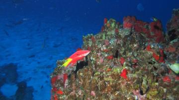

Últimas notícias sobre meio ambiente

Novo ecossistema marinho é descoberto no espírito santo
/ 19 de fevereiro 2024Batizadas de “Colinas Coralinas” devido ao seu formato de monte, as estruturas possuem um ambiente exclusivo que não pode ser encontrado em outra região do planeta e ficam em Trindade, arquipélago mais distante do litoral brasileiro

Nova espécie de cobra gigante é descoberta na Amazônia
/ 19 de fevereiro 2024Cientistas que trabalham na Floresta Amazônica descobriram uma nova espécie de cobra, considerada a maior do mundo.
Últimas notícias sobre o meio ambiente CNN Brasil

Orca devora tubarão branco em ataque 'surpreendente'
/ 2 de março 2024 às 11:20Cientistas afirmaram que as imagens do episódio são "sem precedentes" e demonstram as habilidades predatórias excepcionais das orcas.
Principais assuntos
/ 02 de março 2024 às 19:16

Abaixo-assinado pede fim de voos em áreas de proteção ambiental no Rio
/ 01/03/2024 às 12:54

Tempestade Akará: conheça os riscos do fenômeno no Brasil
/ 20/02/2024 às 11:45

Janeiro foi mês mais quente já registrado no mundo, afirmam cientistas da UE
/ 08/02/2024 às 10:26